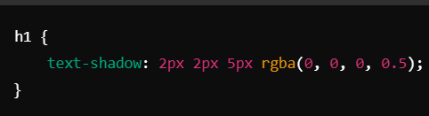
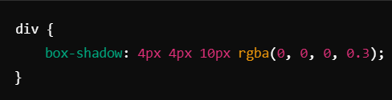

Introduccion a CSSText-Shadow y Box-Shadow
La propiedad text-shadow agrega una sombra al texto. Se especifica con 4 valores:
Desplazamiento horizontal (dx) -- Desplazamiento vertical (dy)
Desenfoque (blur radius) (opcional) -- Color de la sombra (opcional)

La propiedad box-shadow agrega una sombra alrededor de un elemento.
Desplazamiento horizontal (dx)
Desplazamiento vertical (dy)
Desenfoque (blur radius) (opcional)
Expansión de la sombra (spread radius) (opcional)
Color de la sombra.
